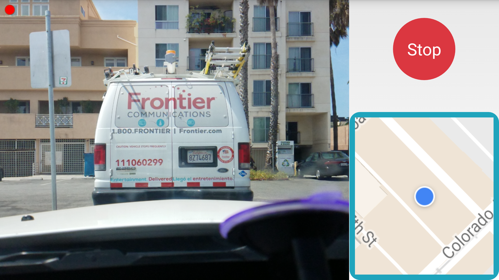
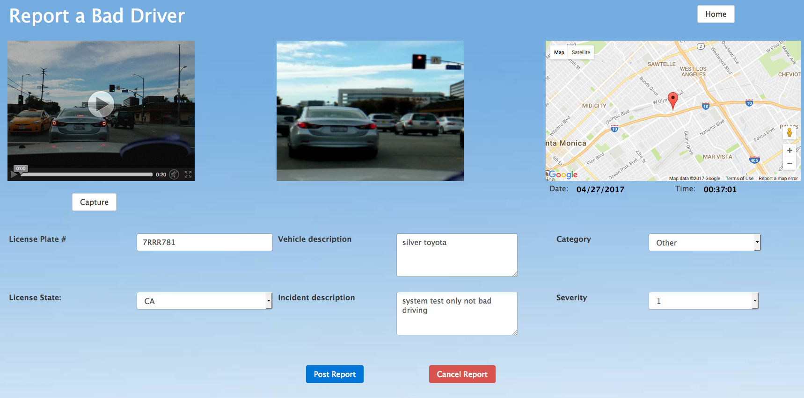

What's the goal of the CarmaCam system?
How does the CarmaCam system work?
How do you know that a bad driver is going to appear so you can start capturing video?
Will fake reports be a problem?
If it's free, who pays for the cost of operating the system?
What's my incentive to participate?
What's the goal of the CarmaCam system?
Every day in the US, someone is killed in a car accident every 15 minutes, and someone is injured in a car accident every 15 seconds. There's about a trillion dollars a year in property damage. These numbers are horrific and completely unacceptable so we're trying to do something about it. With over 5 million reported traffic accidents a year and an estimated 10 million unreported accidents, the number of law enforcement "eyes on the road" is completely inadequate.
Without enough eyes on the road, changing the legal penalties for traffic violations is ineffective. And with societal factors like the enormous number of people texting and driving, recent trends towards legalization of marijuana, etc. the problem is getting worse, not better. So, how can we get more eyes on the road?
We believe that using a crowdsourced data collection approach (more eyes on the road) combined with a crowdsourced review process (to eliminate false claims) we can generate a database of bad driving video that can be accessed by insurance companies, to make habitual bad driving more expensive. That's what our system is about.
How does the CarmaCam system work?
Step 1 - Get started: Register for a free account, and get our free dashboard camera mobile app. Get a dashboard mount for your phone as well.

1 - Put the CarmaCam app on your dashboard and touch the screen to upload video when you see a bad driver
When you create your account, use the phone number of the mobile device that will be uploading video, and give us the email address where you'd like to receive email links to your bad driver videos after they're uploaded.
Step 2 - Capture video of bad drivers: Mount your phone on your dashboard, launch our app and start driving. When you see someone running a red light, weaving in and out of traffic while going 20 miles above the speed limit, making reckless lane changes, etc. take a deep breath, let out a few expletives if you like, then just tap the video window on your phone. We'll upload the last 20 seconds of video to the cloud, and send you an email with a link where you can file your report. Then just keep driving and tap your phone the next time you encounter bad driving. It's as easy as turning on the radio in your car.
File your report later, when you're not driving the car. Note that when your phone is mounted on the dashboard and recording video, you probably won't be texting and driving, so you're already driving more safely. Remember, we're not looking for marginal cases, we want video of the egregious bad driving incidents that make you want to swear out loud at the idiot who just endangered everybody's safety.
Step 3 - File your bad driver reports: When you're done driving and in front of a computer, check your email and you'll find a link you can click to view the video that you captured.

2 - Fill out the report form later, when you get home, and you're done
In many cases your video will show a clear instance of bad driving, and you'll be able to capture the license plate number of the offending vehicle. You can freeze the video and capture a zoomed in image from the video by hitting the Capture button, which will attach it to your report. If your video doesn't capture the incident or the license plate number isn't clear, just delete the report and better luck next time. Once you've posted the report, you're done. The location and time of the incident are uploaded along with the video, and we provide a map to jog your memory.
Your report will be reviewed by 3 randomly selected independent people, and there has to be unanimous agreement that the video shows bad driving and clearly identifies the vehicle responsible, so if your video doesn't show everything clearly just move on. Chances are the bad driver will drive badly again and someone else will catch them in the act.
Once you've filled out the simple report form and posted your video, you're done.
Step 4 (optional) - Review other people's bad driver reports: Our review process requires 3 randomly selected reviewers to agree with the poster of the report before it's accepted. Drivers always get the benefit of the doubt, if there's any disagreement we just discard the report. You can't review your own reports, so there's no way to game the system. You can also participate by only reviewing reports, there's no requirement to capture video and file reports.
How do you know that a bad driver is going to appear so you can start capturing video?
You never know when a bad driver is going to appear, so the only workable approach is to record video continuously. We save about a minute of video on your phone, then overwrite it when the buffer fills up, so it doesn't take a lot of space on your device. When you tap the screen on your phone, we take the last 15-20 seconds of video and upload it to your account in the cloud.
You can't predict when the bad driver will show up, so we allow you to react after the incident is over. We give you a video window into the past. And since the last thing we want to do is to distract you when there's a bad driver in the vicinity, all you have to do is tap the screen once to upload, and you've got enough time to take a deep breath (or let out a few choice curse words) first. After you've vented, tap the phone to upload the video. You might feel better knowing that you've done something that can help make the roads safer.
Will fake reports be a problem?
Every posted video will get reviewed by 3 randomly selected independent reviewers, and we require unanimous agreement that the video clearly shows bad driving and clearly identifies the license plate number of the offending vehicle. With this crowdsourced review process there's little chance of anything other than rock-solid video evidence ever making it into our bad driver database -- and that's by design. We're not looking for borderline or marginal cases of bad driving, we want to identify and document the egregious cases of bad driving -- and there are plenty of them to go around. 15 million accidents a year don't happen without a lot of seriously bad driving. Our demo video might help to explain the difference.
What does it cost? (Hint: It's free)
It's free to register for an account and our mobile app is also free. You're responsible for any increases in data usage (uploaded videos average around 20-25 MB) and for getting a dashboard mount for your phone.
If it's free, who pays for the cost of operating the system?
Our system is funded by insurance companies who want to subscribe to our database. These insurance companies can then adjust the rates they are charging to bad drivers, and lower the rates for good drivers. So in a sense, the bad drivers will pay for the system. We're increasing the cost of driving badly and endangering everybody's safety.
You can register for an account here. And you can get our mobile app here.
What's my incentive to participate?
The main incentive, of course, is that you're making the road system safer, and the accident you prevent may be your own. And you may find that you're driving more safely with your phone on the dashboard making a conscious effort to look for bad driving.
But additionally...our system tracks the number of reports that have successfully passed the review process and adds CarmaPoints to your account each time one of your reports reaches the insurance database. We'll work with your insurance company to help them reward you for doing your part in cleaning up the situation. We also give you CarmaPoints for reviewing other people's reports.
You'll get 10 CarmaPoints every time one of your reports passes review, and 1 CarmaPoint for each review you submit.